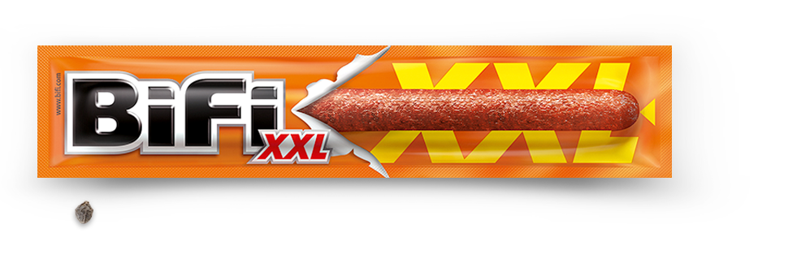

Glóin, Sohn von Gróin, Bruder von Óin und Vater von Gimli, war einer der Zwerge, die zusammen mit Thorin Eichenschild und dem "Meisterdieb" Bilbo Beutlin aufbrachen, um den Erebor zurückzuerobern. Glóin gehörte dem Königshaus der Zwerge von Erebor an.
